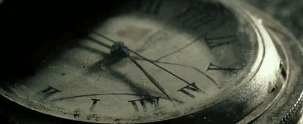
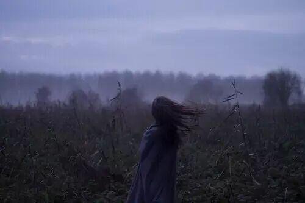
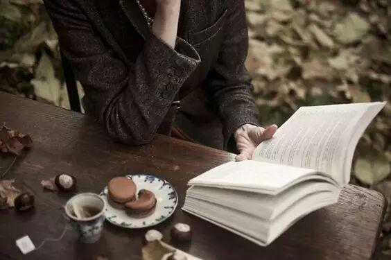

使用小程序

◆◆◆
时间
到了一年一度的高考了
在每个人的学生时代
高考似乎是一件能决定你人生的最重大的事件
想起高考
便会知道我们的人生
或许会因为这场考试发生很多变化
但它并不会一次性地决定你这辈子就会成为什么样的人
但是想起那段时光
曾经我们觉得暗无天日似乎永远望不到头的时光
一旦过去了
就变成我们无论到了什么年纪都会怀念的光辉岁月
优生、差生、考试、家长会、排名
这一切在以后回头看的时候
都是青春记忆里最美好的桥段
是我们将来站在人生更多的岔口前
怀念起来最好的日子
前方是长长的幽暗的隧道
只要向着光的方向奔跑
总会闯出去的
好好珍惜这所有
你的老师、你的同学们
然后往前冲吧
这是实现你理想的第一步
穿过这道墙
你会看见更广阔的世界
那么，电协祝愿广大考生
明天都可以取得理想的成绩！
爱你们~加油！
——纪晴冉《跪着爱，躺着爱》
——高晓松《晓说2》

——苑子文，苑子豪《愿我的世界总有你二分之一》
——沐歌《多么幸运，人海中遇见你》
——刘同
——一草《毕业了我们一无所有》

——《全城高考》
——亦舒《我们不是天使》
——桐华《那些回不去的年少时光》
编辑/马忠臣